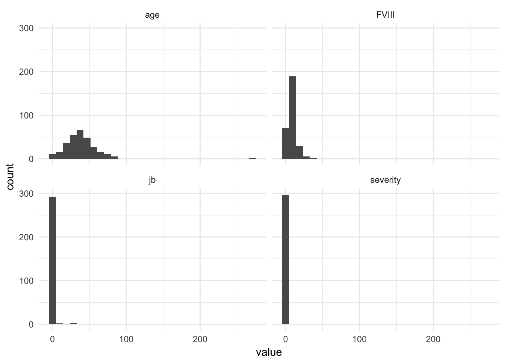

Presentation Jointbleed
Aernoud Fiolet, Koos van Kesteren, Wouter van Amsterdam
2018-03-08
Last updated: 2018-03-09
Code version: fe268f1
Setup R
library(dplyr)
library(data.table)
library(magrittr)
library(purrr)
library(here) # for tracking working directory
library(ggplot2); theme_set(theme_minimal())
library(epistats)
library(broom)Get data
joint <- read.table(here("data", "jointbleed.txt"), sep = ",", header = T)
str(joint)'data.frame': 297 obs. of 4 variables:
$ jb : int 0 0 1 0 0 0 0 0 0 0 ...
$ age : int 48 16 51 72 76 25 85 18 62 37 ...
$ FVIII : int 10 7 12 9 5 5 2 7 10 5 ...
$ severity: int 0 0 0 0 0 0 1 0 0 0 ...Table
table(joint$jb)
0 1 2 3 4 5 24 25 32
270 11 4 3 4 2 1 1 1 Marginal outcome distribution
joint %>%
ggplot(aes(x = jb)) +
geom_histogram() +
theme_minimal()Very high count of zeros, zero inflated poisson
Curation
Check for outliers
require(tidyr)
joint %>%
gather(key = "variable", value = "value") %>%
ggplot(aes(x = value)) +
geom_histogram() +
facet_wrap(~variable)
Age has an outlier
joint %>%
arrange(-age) %>% filter(row_number() < 10) jb age FVIII severity
1 0 271 10 0
2 0 87 8 0
3 0 86 4 1
4 0 85 2 1
5 0 83 5 0
6 0 83 9 0
7 0 83 13 0
8 0 78 4 1
9 0 77 15 0Remove this case, this must be an error. Highly probable that this is random
joint %<>% filter(age < 120)Look at pairwise marginal distributions
joint %>%
ggplot(aes(x = age, y = jb)) +
geom_point()
joint %>%
ggplot(aes(x = age, y = FVIII)) +
geom_point()Modeling
Based on theoretical considerations, these models will be evaluated:
- linear regression (with log-transform of response)
- poisson (due to nature of outcome)
- quasipoisson (to account for possible overdispersion)
- zero-inflated poisson (based on the outcome distribution)
- negative binomial
Liklihood methods:
- linear regression: ordinary least squares
- poisson: maximum likelihood
- quasipoisson: quasi-likelihood
- zero-inflated poisson: maximum likelihood
- negative binomial: maximum likelihood
This means we can directly compare poisson, ZIP and negative binomial, but not quasi-poisson.
Strategy:
For each link function and error distribution
- fit model with age and FVIII and interaction
- reduce model using likelihood ratio test
- save final model
Variable transformations
Add a log + 0.5 transformed jb to account for zeros Also log-transform FVIII as it is a ratio
joint %<>% mutate(
jb_log = log(jb + 0.5),
FVIII_log = log(FVIII)
)joint %>%
select(-age, -severity) %>%
gather(FVIII, FVIII_log, key = "variable", value = "xvalue") %>%
gather(jb, jb_log, key = "outcome", value = "yvalue") %>%
ggplot(aes(x = xvalue, y = yvalue)) +
geom_point() + geom_smooth() +
facet_grid(outcome~variable, scales = "free") +
theme_minimal()Remove zeros
joint %>%
filter(jb > 0) %>%
ggplot(aes(x = FVIII, y = jb)) +
geom_point()poisson
fit_pois <- glm(jb ~ age * FVIII, data = joint, family = poisson)
drop1(fit_pois, test = "Chisq")Single term deletions
Model:
jb ~ age * FVIII
Df Deviance AIC LRT Pr(>Chi)
<none> 779.97 864.82
age:FVIII 1 780.45 863.30 0.48533 0.486fit_pois <- glm(jb ~ age + FVIII, data = joint, family = poisson)
drop1(fit_pois, test = "Chisq")Single term deletions
Model:
jb ~ age + FVIII
Df Deviance AIC LRT Pr(>Chi)
<none> 780.45 863.30
age 1 781.63 862.48 1.173 0.2787
FVIII 1 852.44 933.29 71.990 <2e-16 ***
---
Signif. codes: 0 '***' 0.001 '**' 0.01 '*' 0.05 '.' 0.1 ' ' 1fit_pois <- glm(jb ~ FVIII, data = joint, family = poisson)
drop1(fit_pois, test = "Chisq")Single term deletions
Model:
jb ~ FVIII
Df Deviance AIC LRT Pr(>Chi)
<none> 781.63 862.48
FVIII 1 854.69 933.54 73.06 < 2.2e-16 ***
---
Signif. codes: 0 '***' 0.001 '**' 0.01 '*' 0.05 '.' 0.1 ' ' 1dispersion(fit_pois)[1] 12.57082lm
Create a likelihood function for the linear model, this makes the models directly comparable
fit_lm <- glm(jb_log ~ age * FVIII, data = joint)
drop1(fit_lm, test = "Chisq")Single term deletions
Model:
jb_log ~ age * FVIII
Df Deviance AIC scaled dev. Pr(>Chi)
<none> 103.19 538.1
age:FVIII 1 103.19 536.1 0.0017255 0.9669fit_lm <- glm(jb_log ~ age + FVIII, data = joint)
drop1(fit_lm, test = "Chisq")Single term deletions
Model:
jb_log ~ age + FVIII
Df Deviance AIC scaled dev. Pr(>Chi)
<none> 103.19 536.10
age 1 103.23 534.20 0.1026 0.74870
FVIII 1 105.35 540.23 6.1307 0.01329 *
---
Signif. codes: 0 '***' 0.001 '**' 0.01 '*' 0.05 '.' 0.1 ' ' 1fit_lm <- glm(jb_log ~ FVIII, data = joint)
drop1(fit_lm, test = "Chisq")Single term deletions
Model:
jb_log ~ FVIII
Df Deviance AIC scaled dev. Pr(>Chi)
<none> 103.23 534.2
FVIII 1 105.41 538.4 6.1972 0.0128 *
---
Signif. codes: 0 '***' 0.001 '**' 0.01 '*' 0.05 '.' 0.1 ' ' 1summary(glm(jb_log ~ FVIII, data = joint))
Call:
glm(formula = jb_log ~ FVIII, data = joint)
Deviance Residuals:
Min 1Q Median 3Q Max
-0.2848 -0.2241 -0.1635 -0.1029 3.9199
Coefficients:
Estimate Std. Error t value Pr(>|t|)
(Intercept) -0.393218 0.062878 -6.254 1.41e-09 ***
FVIII -0.015158 0.006078 -2.494 0.0132 *
---
Signif. codes: 0 '***' 0.001 '**' 0.01 '*' 0.05 '.' 0.1 ' ' 1
(Dispersion parameter for gaussian family taken to be 0.3511177)
Null deviance: 105.41 on 295 degrees of freedom
Residual deviance: 103.23 on 294 degrees of freedom
AIC: 534.2
Number of Fisher Scoring iterations: 2quisipoisson
fit_qpois <- glm(jb ~ age * FVIII, data = joint, family = quasipoisson)
drop1(fit_qpois, test = "Chisq")Single term deletions
Model:
jb ~ age * FVIII
Df Deviance scaled dev. Pr(>Chi)
<none> 779.97
age:FVIII 1 780.45 0.038772 0.8439fit_qpois <- glm(jb ~ age + FVIII, data = joint, family = quasipoisson)
drop1(fit_qpois, test = "Chisq")Single term deletions
Model:
jb ~ age + FVIII
Df Deviance scaled dev. Pr(>Chi)
<none> 780.45
age 1 781.63 0.0940 0.75917
FVIII 1 852.44 5.7666 0.01633 *
---
Signif. codes: 0 '***' 0.001 '**' 0.01 '*' 0.05 '.' 0.1 ' ' 1fit_qpois <- glm(jb ~ FVIII, data = joint, family = quasipoisson)
drop1(fit_qpois, test = "Chisq")Single term deletions
Model:
jb ~ FVIII
Df Deviance scaled dev. Pr(>Chi)
<none> 781.63
FVIII 1 854.69 5.8112 0.01592 *
---
Signif. codes: 0 '***' 0.001 '**' 0.01 '*' 0.05 '.' 0.1 ' ' 1zero-inflated poisson
require(pscl)
fit_zip <- zeroinfl(jb ~ age * FVIII, data = joint)
AIC(fit_zip)[1] 444.7131fit_zip <- zeroinfl(jb ~ age * FVIII, data = joint, dist = "negbin")
AIC(fit_zip)[1] 295.3253# drop1(fit_zip, test = "Chisq")
fit_zip <- zeroinfl(jb ~ age * FVIII | FVIII, data = joint)
AIC(fit_zip)[1] 442.4802# drop1(fit_zip, test = "Chisq")No further reduction possible
negative binomial
require(MASS); select <- dplyr::select
fit_nb <- glm.nb(jb ~ age * FVIII, data = joint)
drop1(fit_nb, test = "Chisq")Single term deletions
Model:
jb ~ age * FVIII
Df Deviance AIC LRT Pr(>Chi)
<none> 67.325 298.24
age:FVIII 1 67.389 296.30 0.06316 0.8016fit_nb <- glm.nb(jb ~ age + FVIII, data = joint)
drop1(fit_nb, test = "Chisq")Single term deletions
Model:
jb ~ age + FVIII
Df Deviance AIC LRT Pr(>Chi)
<none> 67.337 296.30
age 1 67.574 294.54 0.2364 0.6267967
FVIII 1 80.749 307.71 13.4115 0.0002501 ***
---
Signif. codes: 0 '***' 0.001 '**' 0.01 '*' 0.05 '.' 0.1 ' ' 1fit_nb <- glm.nb(jb ~ FVIII, data = joint)
drop1(fit_nb, test = "Chisq")Single term deletions
Model:
jb ~ FVIII
Df Deviance AIC LRT Pr(>Chi)
<none> 67.244 294.54
FVIII 1 80.920 306.21 13.676 0.0002172 ***
---
Signif. codes: 0 '***' 0.001 '**' 0.01 '*' 0.05 '.' 0.1 ' ' 1Check non-linear terms
Neither splines or polynomial terms improved AIC
spline_dfs <- as.list(1:5)
spline_dfs %>%
map_dbl(function(df) glm.nb(jb ~ splines::ns(FVIII, df = df), data = joint) %>%
AIC)Warning: glm.fit: fitted rates numerically 0 occurred
Warning: glm.fit: fitted rates numerically 0 occurred[1] 296.5376 294.8631 296.8419 298.5633 299.6983spline_dfs %>%
map_dbl(function(df) glm.nb(jb ~ poly(FVIII, degree = df), data = joint) %>%
AIC)Warning: glm.fit: fitted rates numerically 0 occurred
Warning: glm.fit: fitted rates numerically 0 occurred
Warning: glm.fit: fitted rates numerically 0 occurred[1] 296.5376 294.6719 296.6444 297.5305 299.5097glm.nb(jb ~ splines::ns(FVIII, df = 2), data = joint)Warning: glm.fit: fitted rates numerically 0 occurred
Call: glm.nb(formula = jb ~ splines::ns(FVIII, df = 2), data = joint,
init.theta = 0.05163026687, link = log)
Coefficients:
(Intercept) splines::ns(FVIII, df = 2)1
-0.5807 -28.5957
splines::ns(FVIII, df = 2)2
-58.3855
Degrees of Freedom: 295 Total (i.e. Null); 293 Residual
Null Deviance: 85.18
Residual Deviance: 67 AIC: 294.9glm.nb(jb ~ FVIII, data = joint)
Call: glm.nb(formula = jb ~ FVIII, data = joint, init.theta = 0.04795752412,
link = log)
Coefficients:
(Intercept) FVIII
1.3131 -0.3236
Degrees of Freedom: 295 Total (i.e. Null); 294 Residual
Null Deviance: 80.92
Residual Deviance: 67.24 AIC: 296.5Zero-inflated negative binomial
fit_nbzip <- zeroinfl(jb ~ age * FVIII, data = joint, dist = "negbin")
drop1(fit_nbzip, test = "Chisq")Single term deletions
Model:
jb ~ age * FVIII
Df AIC LRT Pr(>Chi)
<none> 295.32
age:FVIII 2 291.41 0.080486 0.9606fit_nbzip <- zeroinfl(jb ~ age + FVIII, data = joint, dist = "negbin")
drop1(fit_nbzip, test = "Chisq")Single term deletions
Model:
jb ~ age + FVIII
Df AIC LRT Pr(>Chi)
<none> 291.41
age 2 297.31 9.9081 0.007055 **
FVIII 2 310.51 23.1039 9.617e-06 ***
---
Signif. codes: 0 '***' 0.001 '**' 0.01 '*' 0.05 '.' 0.1 ' ' 1First check covariates for zero distribution
fit_nbzip <- zeroinfl(jb ~ age * FVIII | age * FVIII, data = joint, dist = "negbin")
AIC(fit_nbzip)[1] 295.3253fit_nbzip <- zeroinfl(jb ~ age * FVIII | age + FVIII, data = joint, dist = "negbin")
AIC(fit_nbzip)[1] 291.1756fit_nbzip <- zeroinfl(jb ~ age * FVIII | FVIII, data = joint, dist = "negbin")
AIC(fit_nbzip)[1] 300.8118fit_nbzip <- zeroinfl(jb ~ age * FVIII | age, data = joint, dist = "negbin")
AIC(fit_nbzip)[1] 302.0072fit_nbzip <- zeroinfl(jb ~ age * FVIII | 1, data = joint, dist = "negbin")
AIC(fit_nbzip)[1] 302.239Check part for count distribution
fit_nbzip <- zeroinfl(jb ~ age * FVIII | age + FVIII, data = joint, dist = "negbin")
AIC(fit_nbzip)[1] 291.1756fit_nbzip <- zeroinfl(jb ~ age + FVIII | age + FVIII, data = joint, dist = "negbin")
AIC(fit_nbzip)[1] 291.4058fit_nbzip <- zeroinfl(jb ~ age | age + FVIII, data = joint, dist = "negbin")
AIC(fit_nbzip)[1] 301.5861fit_nbzip <- zeroinfl(jb ~ 1 | age + FVIII, data = joint, dist = "negbin")
AIC(fit_nbzip)[1] 300.6746fit_nbzip <- zeroinfl(jb ~ FVIII | age + FVIII, data = joint, dist = "negbin")
AIC(fit_nbzip)[1] 291.5206Compare models
fits <- list(
poisson = fit_pois,
# lm = fit_lm,
# quasipoisson = fit_qpois,
zip = fit_zip,
negative_binomial = fit_nb,
zip_negative_binomial = fit_nbzip
)Compare with AIC
model_table <- fits %>%
map_df(function(fit) data.frame(
deviance = ifelse(is.null(deviance(fit)), NA, deviance(fit)),
loglik = logLik(fit),
AIC = AIC(fit)
), .id = "model")
knitr::kable(model_table, digits = 1)| model | deviance | loglik | AIC |
|---|---|---|---|
| poisson | 781.6 | -429.2 | 862.5 |
| zip | NA | -215.2 | 442.5 |
| negative_binomial | 67.2 | -145.3 | 296.5 |
| zip_negative_binomial | NA | -139.8 | 291.5 |
fits %>%
map_df(function(fit) data.frame(
deviance = ifelse(is.null(deviance(fit)), NA, deviance(fit)),
loglik = logLik(fit),
AIC = AIC(fit)
), .id = "model") model deviance loglik AIC
1 poisson 781.62633 -429.2380 862.4760
2 zip NA -215.2401 442.4802
3 negative_binomial 67.24413 -145.2688 296.5376
4 zip_negative_binomial NA -139.7603 291.5206Model diagnostics
All observations fall within a Cook’s distance of < 0.5
sum_table <- summary(fit_nbzip)
sum_table
Call:
zeroinfl(formula = jb ~ FVIII | age + FVIII, data = joint, dist = "negbin")
Pearson residuals:
Min 1Q Median 3Q Max
-0.24427 -0.23604 -0.20637 -0.09123 12.13492
Count model coefficients (negbin with log link):
Estimate Std. Error z value Pr(>|z|)
(Intercept) 1.8889 0.8076 2.339 0.019341 *
FVIII -0.3841 0.1027 -3.740 0.000184 ***
Log(theta) -2.7993 0.2518 -11.115 < 2e-16 ***
Zero-inflation model coefficients (binomial with logit link):
Estimate Std. Error z value Pr(>|z|)
(Intercept) -160.808 258.676 -0.622 0.534
age 6.501 10.627 0.612 0.541
FVIII -49.626 85.750 -0.579 0.563
---
Signif. codes: 0 '***' 0.001 '**' 0.01 '*' 0.05 '.' 0.1 ' ' 1
Theta = 0.0609
Number of iterations in BFGS optimization: 262
Log-likelihood: -139.8 on 6 Dfcov_grid <- expand.grid(
FVIII = seq(0, 40, length.out = 100),
age = seq(0, 80, length.out = 100)
)
grid_predictions <- predict(fit_nbzip, newdata = cov_grid)
preds <- data.frame(cov_grid, pred_count = grid_predictions)
preds %>%
ggplot(aes(x = age, y = FVIII, fill = pred_count)) +
geom_tile()Compare with observed counts
joint %<>%
mutate(predicted_count = fit_nbzip$fitted.values,
resid = residuals(fit_nbzip, type = "response"),
pearson_resid = residuals(fit_nbzip, type = "pearson"))joint %>%
ggplot(aes(x = age, y = FVIII, z = jb)) +
stat_summary_hex(fun = function(x) mean(x), bins = 12) +
ggtitle("mean number of joint bleeds")joint %>%
ggplot(aes(x = age, y = FVIII, z = jb)) +
stat_summary_hex(fun = function(x) mean(x > 0), bins = 12) +
ggtitle("percentage of participants with at least 1 joint bleed per year")joint %>%
gather(jb, predicted_count, key = "variable", value = "value") %>%
ggplot(aes(x = age, y = FVIII, z = value)) +
stat_summary_hex(fun = function(x) mean(x), bins = 12) +
facet_grid(variable~.)Warning: attributes are not identical across measure variables;
they will be dropped ggtitle("mean number of joint bleeds")$title
[1] "mean number of joint bleeds"
$subtitle
NULL
attr(,"class")
[1] "labels"joint %>%
ggplot(aes(x = age, y = FVIII, z = pearson_resid)) +
stat_summary_hex(fun = function(x) mean(x), bins = 12) +
ggtitle("Pearson residuals")Discussion
Tried log-transform of FVIII
Session information
sessionInfo()R version 3.4.3 (2017-11-30)
Platform: x86_64-apple-darwin15.6.0 (64-bit)
Running under: macOS Sierra 10.12.6
Matrix products: default
BLAS: /Library/Frameworks/R.framework/Versions/3.4/Resources/lib/libRblas.0.dylib
LAPACK: /Library/Frameworks/R.framework/Versions/3.4/Resources/lib/libRlapack.dylib
locale:
[1] en_US.UTF-8/en_US.UTF-8/en_US.UTF-8/C/en_US.UTF-8/en_US.UTF-8
attached base packages:
[1] stats graphics grDevices utils datasets methods base
other attached packages:
[1] hexbin_1.27.2 MASS_7.3-48 pscl_1.5.2
[4] bindrcpp_0.2 tidyr_0.8.0 broom_0.4.3
[7] epistats_0.1.0 ggplot2_2.2.1 here_0.1
[10] purrr_0.2.4 magrittr_1.5 data.table_1.10.4-3
[13] dplyr_0.7.4
loaded via a namespace (and not attached):
[1] Rcpp_0.12.15 highr_0.6 pillar_1.1.0 compiler_3.4.3
[5] git2r_0.21.0 plyr_1.8.4 bindr_0.1 tools_3.4.3
[9] digest_0.6.15 evaluate_0.10.1 tibble_1.4.2 gtable_0.2.0
[13] nlme_3.1-131 lattice_0.20-35 pkgconfig_2.0.1 rlang_0.1.6
[17] psych_1.7.8 parallel_3.4.3 yaml_2.1.16 stringr_1.2.0
[21] knitr_1.19 tidyselect_0.2.3 rprojroot_1.3-2 grid_3.4.3
[25] glue_1.2.0 R6_2.2.2 foreign_0.8-69 rmarkdown_1.8
[29] reshape2_1.4.3 splines_3.4.3 backports_1.1.2 scales_0.5.0
[33] htmltools_0.3.6 mnormt_1.5-5 assertthat_0.2.0 colorspace_1.3-2
[37] labeling_0.3 stringi_1.1.6 lazyeval_0.2.1 munsell_0.4.3 This R Markdown site was created with workflowr